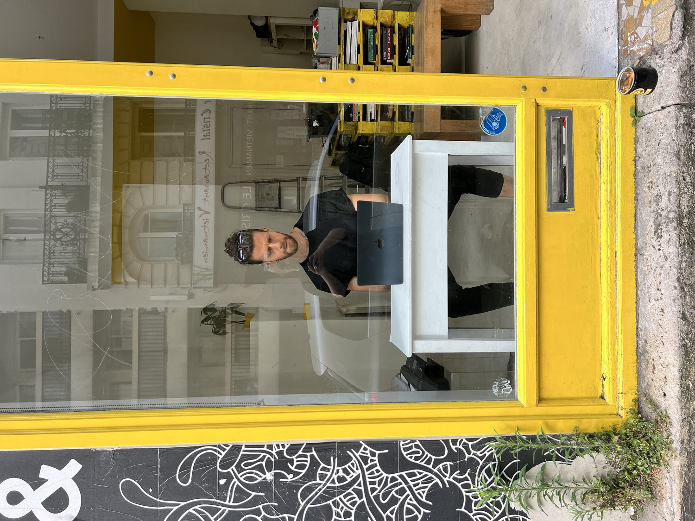
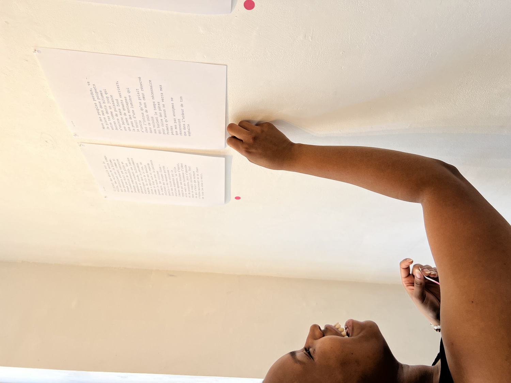
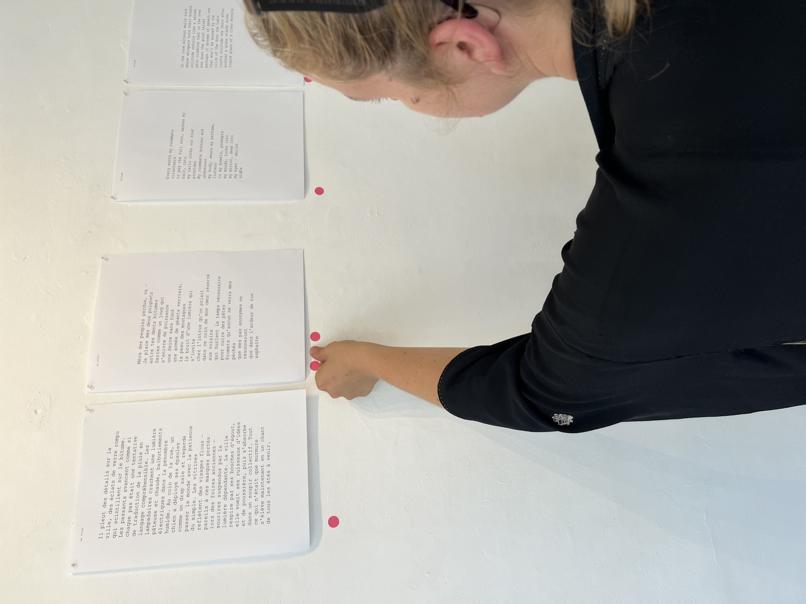
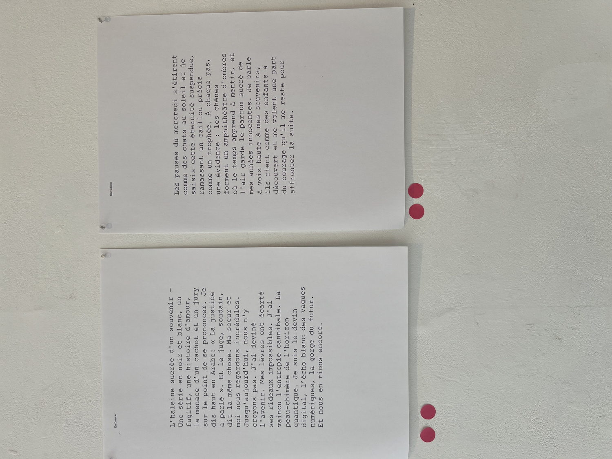
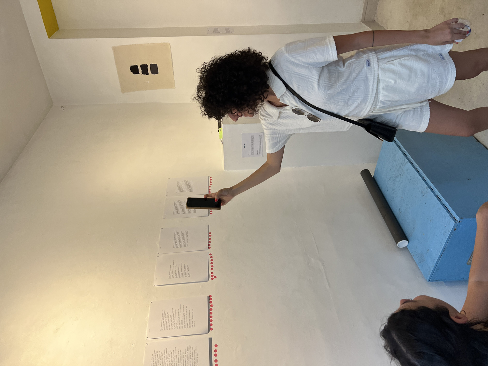
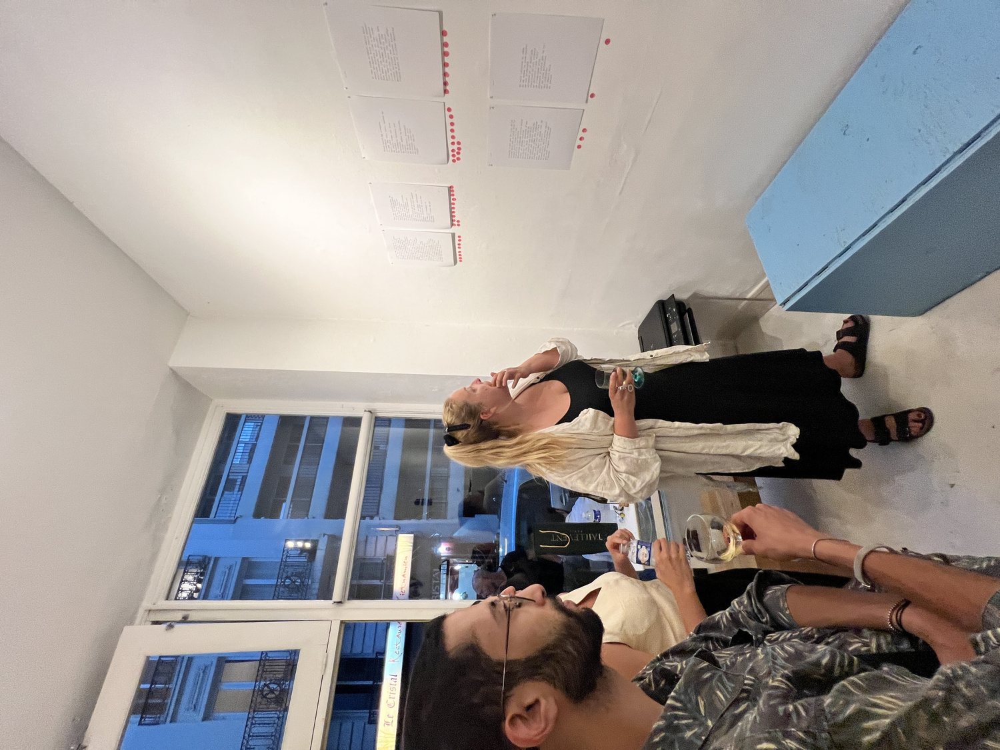
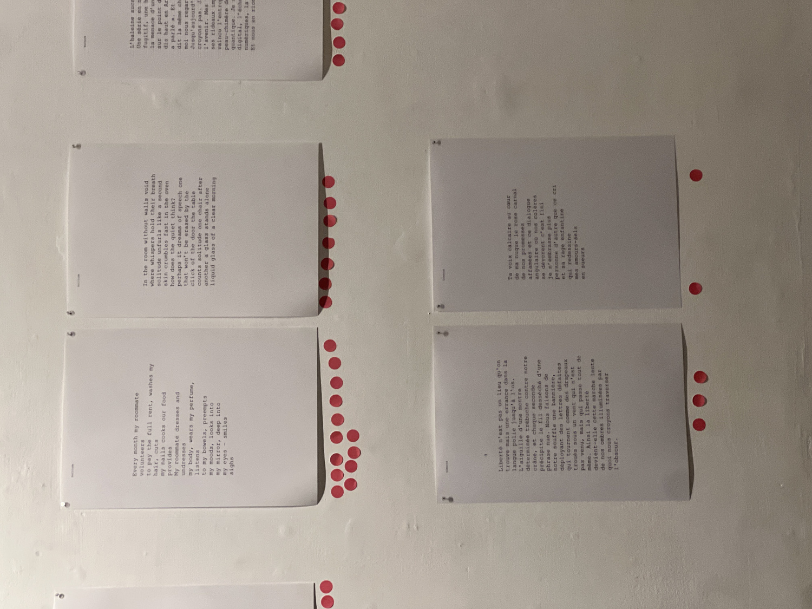
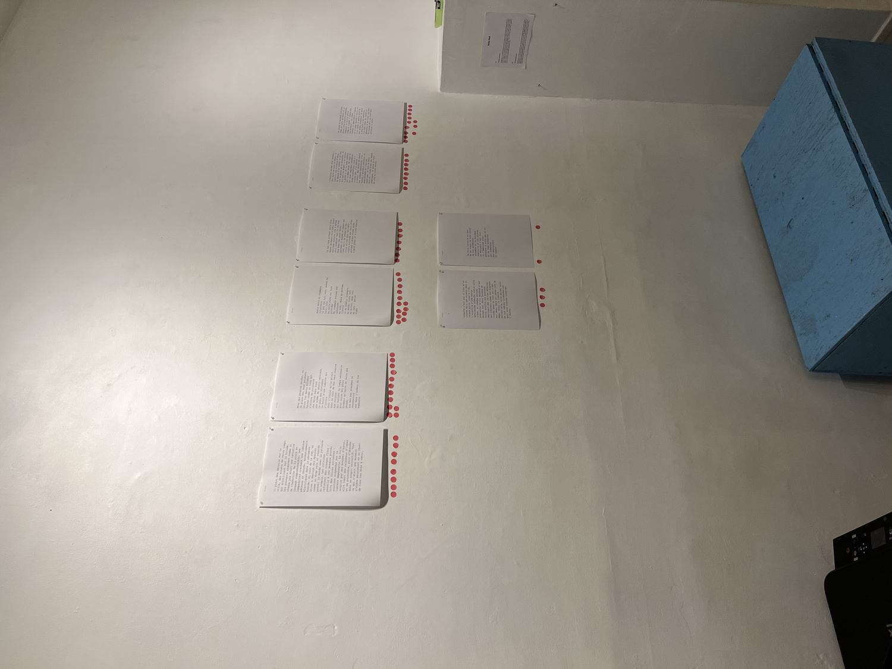
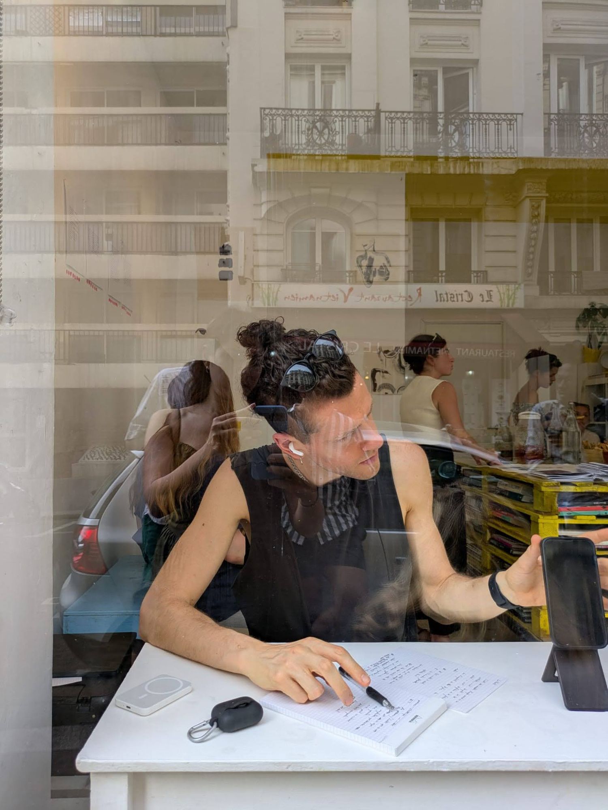
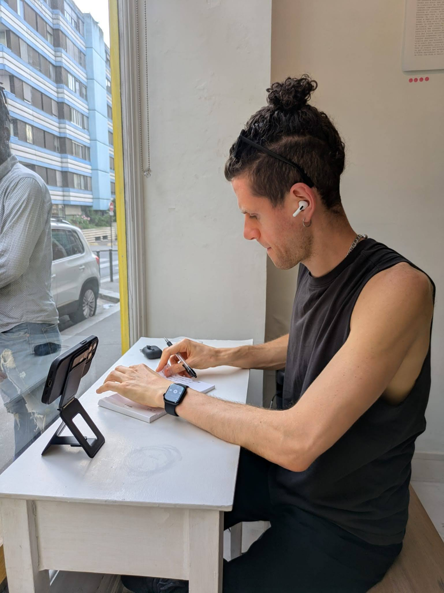

Carnation.exe












Carnation.exe begins with the story of AlphaGo and Lee Sedol. In that match, creativity didn’t come from mastery alone but from confrontation. Sedol’s “God move” unmoored the machine, and AlphaGo’s reply revealed something alien. This is the heart of the work: poetry born not in solitude but in encounter. Rivalry as intimacy. Losing as memory. Each exchange a gift.
In the performance, a human poet and a language model trained only on poetry face one another. Each day a theme (loss, longing, arrival) is chosen. The poet has thirty minutes. The model responds in seconds. Both poems are printed and placed side by side. Visitors read and vote by placing a pink dot beneath the piece that moved them most. The pink carnation, in English, means: I will never forget you.
“The essence of sports is not winning, but losing. Losing as a gift. The loser says to the winner, I will never forget you. And the winner, in turn, devours the memory of the loser, metabolizes them, carries them forward.”
Votes decide not just a winner but the next stage of learning. If the poet wins, their words are added to the training corpus. If the machine wins, the poet studies its work, borrowing from its strangeness. The cycle repeats. Over time, both evolve, shaped by each other, and by the audience who becomes the hidden trainer.
Carnation.exe is not about proving superiority. It stages an ecology of feedback, a ritual of exchange, a flower passed between mouths. A duel that is also a dance. Whether human or machine “wins,” what endures is the trace - the memory of the poem, the pink mark of attention, the vow not to forget.